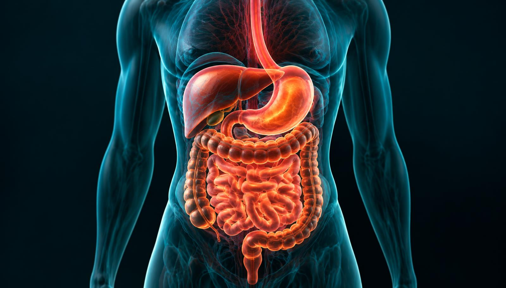
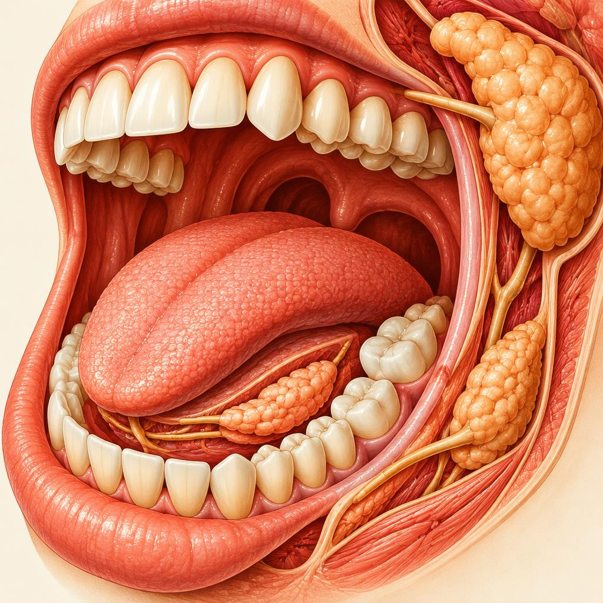
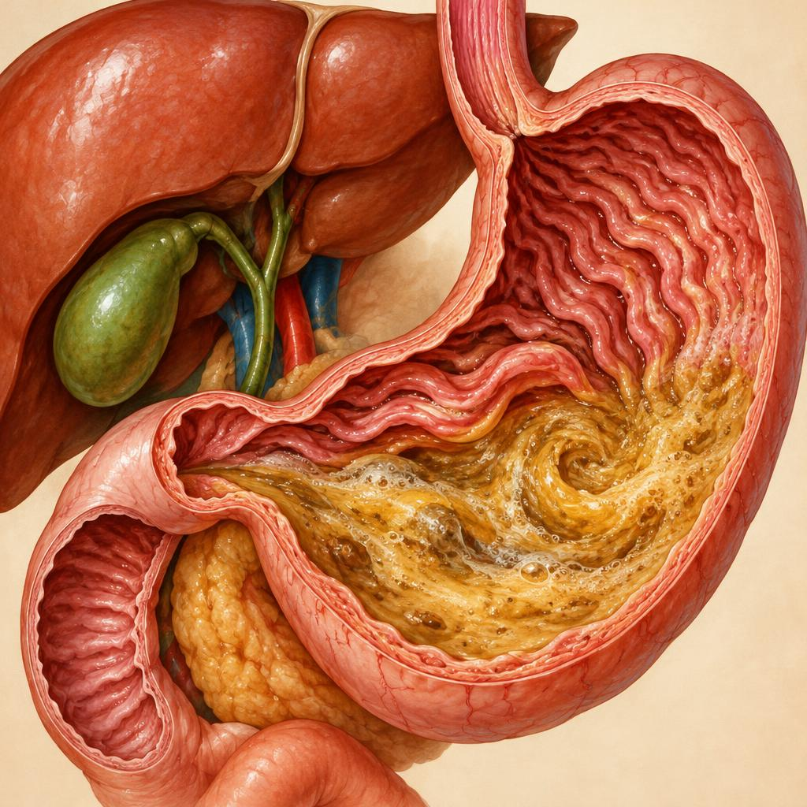
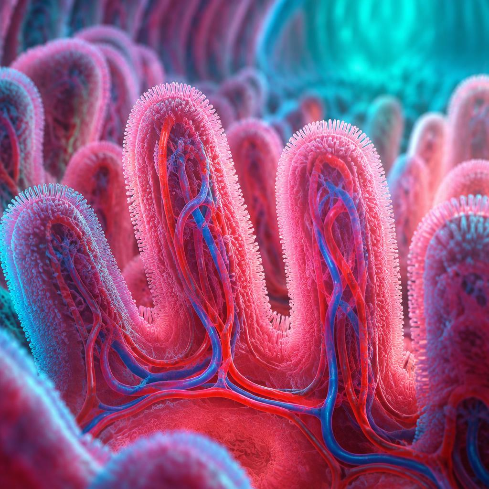
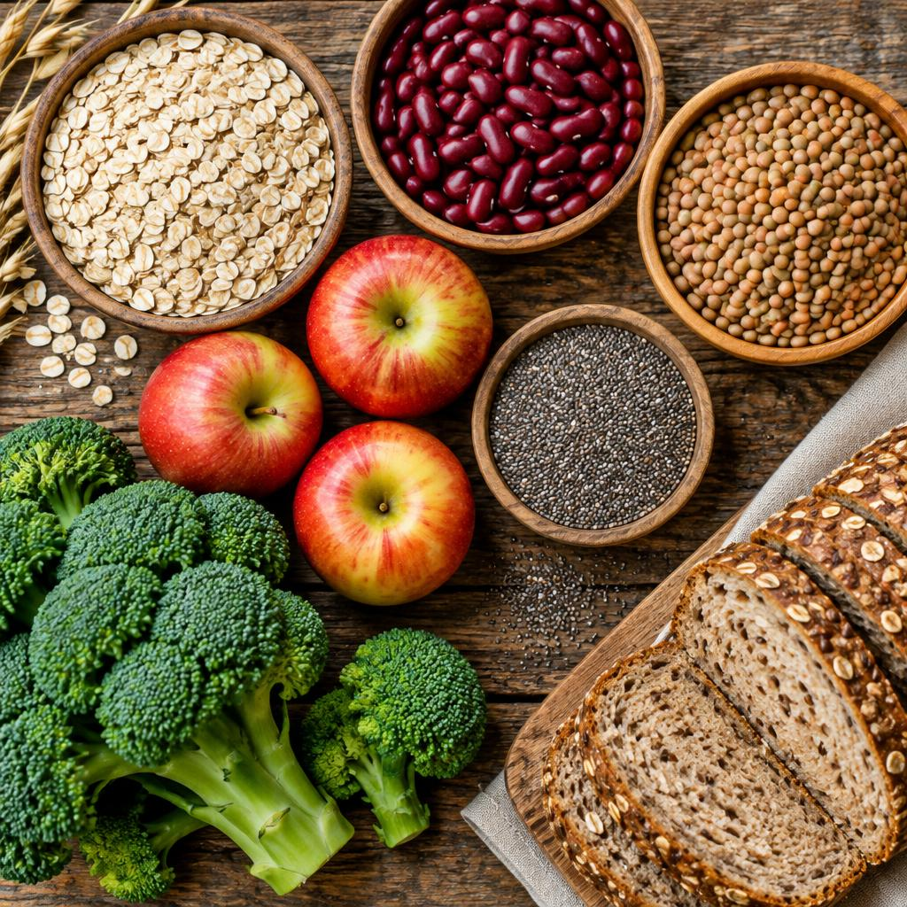
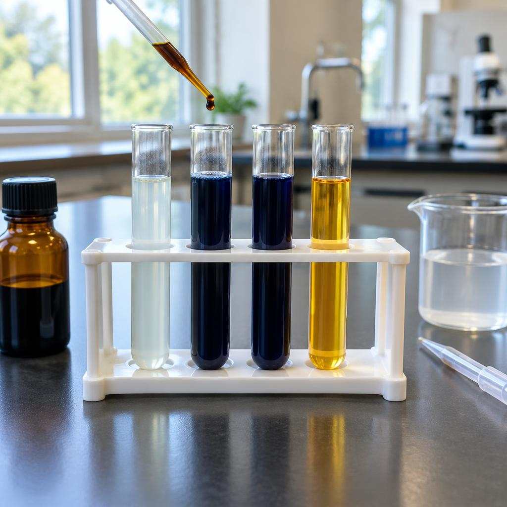

Extra · Cuidando do sistema
Hábitos para uma boa digestão
"Quer comais quer bebais, ou façais outra qualquer coisa, fazei tudo para glória de Deus" (1 Coríntios 10:31). Cuidar do corpo é parte do estilo de vida do desbravador.


Da primeira mordida à última etapa no intestino: um guia completo para entender o caminho do alimento em nosso corpo.
Capítulo 1 · O começo de tudo
Digestão é o conjunto de processos mecânicos (mastigação, deglutição, movimentos peristálticos) e químicos (ação de enzimas, ácido e bile) que transformam os alimentos em moléculas pequenas o bastante para atravessar a parede do intestino e chegar ao sangue. Assim, proteínas viram aminoácidos, carboidratos viram glicose e outros açúcares simples, e gorduras viram ácidos graxos e glicerol.
Esses nutrientes são então levados a todas as células do corpo, fornecendo energia, material para crescimento e reparo dos tecidos.
A digestão começa na boca — com os dentes triturando e a saliva já iniciando a quebra do amido.


Capítulo 2 · A boca
Nas glândulas salivares: três pares principais — parótidas (na frente das orelhas, as maiores), submandibulares (sob a mandíbula) e sublinguais (sob a língua) —, além de centenas de pequenas glândulas espalhadas pela boca. Produzimos de 1 a 1,5 litro de saliva por dia.
Os dentes fazem a digestão mecânica: cortam (incisivos), rasgam (caninos) e trituram (pré-molares e molares) o alimento em pedaços pequenos. Isso aumenta a superfície de contato para as enzimas agirem, facilita a mistura com a saliva e torna possível engolir. Um adulto tem 32 dentes; uma criança, 20 dentes de leite.
A enzima amilase salivar (ptialina) começa a quebrar o amido em maltose (açúcar). Por isso o pão fica levemente doce se mastigado por muito tempo.
O muco e a água amolecem o alimento, unem as partículas formando o bolo alimentar e facilitam a deglutição. Também dissolve substâncias para sentirmos o sabor.
Contém a lisozima e anticorpos que combatem bactérias, neutraliza ácidos, limpa os dentes e ajuda a prevenir cáries.
Capítulo 3 · O mapa
Aprenda a reconhecer cada órgão nas figuras: o tubo digestório (boca, faringe, esôfago, estômago, intestinos e ânus) e as glândulas anexas (glândulas salivares, fígado e pâncreas), que despejam suas secreções no tubo.
Entrada do sistema. Dentes trituram, língua mistura e empurra, saliva inicia a digestão do amido. Forma o bolo alimentar.
Mastigação · AmilaseTubo muscular de ~25 cm que liga a faringe ao estômago. Não digere: conduz o bolo por peristaltismo, ondas de contração que funcionam até de cabeça para baixo.
TransporteBolsa muscular em forma de "J", à esquerda do abdome. Produz suco gástrico (ácido clorídrico + pepsina), que digere proteínas e mata micróbios. Transforma o bolo em quimo.
Proteínas · ÁcidoMaior glândula do corpo (~1,5 kg), à direita, sob o diafragma. Produz a bile, armazena glicogênio e vitaminas, e filtra toxinas do sangue.
Bile · DesintoxicaçãoGlândula alongada atrás do estômago. Libera no duodeno o suco pancreático (amilase, tripsina, lipase e bicarbonato) e produz insulina e glucagon para o sangue.
Enzimas · InsulinaTubo de 6 a 7 m: duodeno, jejuno e íleo. Aqui termina a digestão química (suco entérico + pancreático + bile) e ocorre a maior parte da absorção dos nutrientes.
Absorção~1,5 m: ceco (com o apêndice), cólons e reto. Absorve água e sais, abriga bactérias que produzem vitaminas K e B e forma as fezes.
Água · MicrobiotaAbertura final, controlada por dois esfíncteres musculares (um involuntário e outro voluntário), por onde as fezes são eliminadas — a defecação.
EliminaçãoCapítulo 4 · No estômago
São o mesmo alimento em fases diferentes da viagem. O estômago mexe o conteúdo por 2 a 4 horas, misturando-o com o suco gástrico até virar uma pasta ácida que passa aos poucos pelo piloro para o duodeno.

Massa formada na boca pelo alimento mastigado e misturado à saliva. É macio, levemente alcalino/neutro e é engolido, descendo pelo esôfago até o estômago.
Pasta semilíquida e ácida formada no estômago, quando o bolo é misturado ao suco gástrico e parcialmente digerido. Segue para o intestino delgado, onde, misturado à bile e ao suco pancreático, vira o quilo.
Capítulo 5 · O detergente do corpo
A bile é um líquido esverdeado-amarelado, amargo, composto por água, sais biliares, colesterol, pigmentos (como a bilirrubina) e bicarbonato. Não contém enzimas.
Onde é formada: no fígado, que produz cerca de 500 ml a 1 litro por dia. Entre as refeições ela fica armazenada e concentrada na vesícula biliar.
Função: emulsificar as gorduras — quebra grandes gotas de gordura em gotículas minúsculas, como um detergente faz na louça, aumentando a área para a lipase pancreática agir. Também ajuda a neutralizar a acidez do quimo, a absorver as vitaminas A, D, E e K e a eliminar resíduos.
Onde é liberada: no duodeno (primeira parte do intestino delgado), através do ducto colédoco, quando chega comida gordurosa.

Capítulo 6 · Um tapete microscópico
A parede interna do intestino delgado tem pregas cobertas por milhões de projeções em forma de dedo, as vilosidades (cerca de 1 mm). Cada célula que reveste uma vilosidade possui, na sua superfície, milhares de projeções ainda menores: as microvilosidades, que formam a chamada "borda em escova".
Por que aceleram a absorção? Porque aumentam enormemente a área de contato entre o alimento digerido e a parede intestinal — a superfície de absorção chega a cerca de 200 a 250 m², o tamanho de uma quadra de tênis! Quanto maior a área, mais nutrientes passam ao mesmo tempo para os capilares sanguíneos e linfáticos. Além disso, as microvilosidades contêm enzimas que finalizam a digestão bem no local da absorção.
Capítulo 7 · As vassouras do intestino
São partes dos alimentos de origem vegetal (como celulose, pectina e gomas) que o nosso organismo não consegue digerir. Estão em frutas com casca, verduras, legumes, feijões, grãos integrais, aveia e sementes.
Solúveis (aveia, maçã, feijão) formam um gel que dá saciedade e ajuda a controlar glicose e colesterol. Insolúveis (farelo de trigo, cascas, verduras) dão volume às fezes.
Importância: retêm água, aumentam o volume e amolecem o bolo fecal, estimulam o peristaltismo, regulam o funcionamento do intestino, alimentam as bactérias benéficas e ajudam a prevenir prisão de ventre, hemorroidas, diverticulite e câncer de intestino.
Sem fibras, o alimento fica tempo demais no tubo digestório.
E se os alimentos ficarem mais tempo no trato gastrointestinal? O intestino grosso absorve água demais, as fezes ficam duras e secas e surge a constipação (prisão de ventre). Ocorre fermentação e putrefação excessiva, com gases, inchaço e mau hálito; substâncias tóxicas ficam mais tempo em contato com a mucosa, aumentando o risco de hemorroidas, divertículos, inflamações e câncer colorretal. Beba bastante água junto com as fibras!


Capítulo 8 · Mão na massa
O iodo (tintura de iodo ou lugol, vendido em farmácias) fica azul-escuro/roxo na presença de amido, mas permanece amarelo-castanho com açúcares. Assim podemos "ver" a saliva transformando amido em açúcar.
Amido de milho (maisena), água morna, 2 copos ou tubos transparentes, conta-gotas, tintura de iodo e saliva.
Capítulo 9 · Quem digere o quê
| Nutriente | Onde é digerido | Enzimas / agentes | Onde é absorvido |
|---|---|---|---|
| Carboidratos | Começa na boca, termina no intestino delgado | Amilase salivar, amilase pancreática, maltase, sacarase, lactase | Intestino delgado, como glicose, frutose e galactose → sangue |
| Proteínas | Começa no estômago, termina no intestino delgado | Pepsina (estômago), tripsina e quimotripsina (pâncreas), peptidases | Intestino delgado, como aminoácidos → sangue |
| Lipídios | Principalmente no intestino delgado (duodeno) | Bile (emulsifica) + lipase pancreática | Intestino delgado, como ácidos graxos e glicerol → vasos linfáticos |
| Vitaminas | Não precisam ser digeridas | Lipossolúveis (A, D, E, K) dependem da bile | Intestino delgado (a B12 no íleo); vitaminas K e algumas do complexo B produzidas por bactérias são absorvidas no intestino grosso |
| Minerais | Não precisam ser digeridos | Acidez do estômago ajuda a liberar ferro e cálcio | Principalmente no intestino delgado (duodeno); sódio e potássio também no intestino grosso |
| Água | Não é digerida | — | Cerca de 80–90% no intestino delgado; o restante no intestino grosso, que dá consistência às fezes |
Extra · Você sabia?
é o comprimento total do tubo digestório de um adulto.
é a acidez do suco gástrico — forte o bastante para dissolver metais. Uma camada de muco protege o estômago.
é o tempo de renovação das células que revestem o estômago e o intestino.
é quanto dura, em média, a viagem completa de uma refeição.
de bactérias vivem no intestino — a microbiota, que ajuda na imunidade e produz vitaminas.
O intestino tem cerca de 500 milhões de neurônios e produz ~90% da serotonina do corpo.
funções são atribuídas ao fígado, o único órgão interno capaz de se regenerar.
O barulho da barriga se chama borborigmo: são gases e líquidos sendo empurrados pelo peristaltismo.
Extra · Cuidando do sistema
"Quer comais quer bebais, ou façais outra qualquer coisa, fazei tudo para glória de Deus" (1 Coríntios 10:31). Cuidar do corpo é parte do estilo de vida do desbravador.